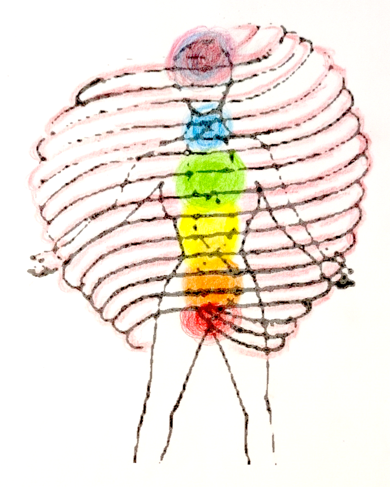

For individuals I offer polarity therapy. It's called energy balancing because when bio-energy flows freely without blockages you have optimal functions. Blocks of our energies by tension, obstructions, thoughts, emotions, cause unbalanced flows. Polarity refers to how energies flow between poles -- right-left, top-bottom, etc. So energies can be under-active on one side, or over-active. Poles are identified as points of the body. Contacts of the poles helps enhance energy flows.
To relieve stress & joint pains is usually straightforward. Many other issues can be addressed of the body, emotions, mental & spirit functions. Let's talk about your wishes for optimal functioning. cmurray22@proton.me txt 613-291-7576
Experiencing polarity therapy helps you understand feelings in the body & be more aware of what's happening when you have emotional feelings, and more or less mental acuity.
Gentle fingertip contacts. One may choose to wear light comfortable clothing. Variable fees.
Circle of Energies for 2 to 6 friends